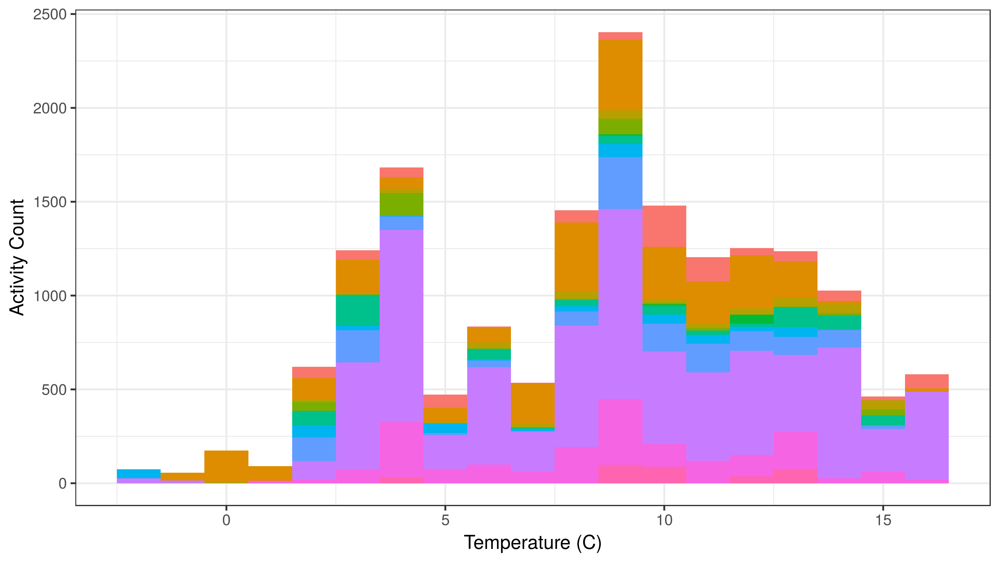

Interpolating
Steffi LaZerte
2017-09-21
Packages
You’ll need several packages from the tidyverse in addition to weathercan to complete the following analysis.
library(weathercan)
library(ggplot2)
library(tibble)
library(dplyr)General usage
You can merge weather data with other data frames by linearly interprolating between points.
For example, here we have a dataset of weather data from Kamloops
glimpse(kamloops)## Observations: 4,368
## Variables: 35
## $ station_name <chr> "KAMLOOPS A", "KAMLOOPS A", "KAMLOOPS A", "KAM...
## $ station_id <dbl> 51423, 51423, 51423, 51423, 51423, 51423, 5142...
## $ prov <fctr> BC, BC, BC, BC, BC, BC, BC, BC, BC, BC, BC, B...
## $ lat <dbl> 50.7, 50.7, 50.7, 50.7, 50.7, 50.7, 50.7, 50.7...
## $ lon <dbl> -120.45, -120.45, -120.45, -120.45, -120.45, -...
## $ date <date> 2016-01-01, 2016-01-01, 2016-01-01, 2016-01-0...
## $ time <dttm> 2016-01-01 00:00:00, 2016-01-01 01:00:00, 201...
## $ year <chr> "2016", "2016", "2016", "2016", "2016", "2016"...
## $ month <chr> "01", "01", "01", "01", "01", "01", "01", "01"...
## $ day <chr> "01", "01", "01", "01", "01", "01", "01", "01"...
## $ hour <chr> "00:00", "01:00", "02:00", "03:00", "04:00", "...
## $ qual <chr> "Partner data that is not subject to review by...
## $ weather <chr> NA, "Mostly Cloudy", NA, NA, "Cloudy", NA, NA,...
## $ hmdx <dbl> NA, NA, NA, NA, NA, NA, NA, NA, NA, NA, NA, NA...
## $ hmdx_flag <chr> "", "", "", "", "", "", "", "", "", "", "", ""...
## $ pressure <dbl> 99.95, 99.93, 99.92, 99.90, 99.86, 99.82, 99.8...
## $ pressure_flag <chr> "", "", "", "", "", "", "", "", "", "", "", ""...
## $ rel_hum <dbl> 74, 76, 74, 73, 70, 71, 69, 69, 71, 71, 71, 70...
## $ rel_hum_flag <chr> "", "", "", "", "", "", "", "", "", "", "", ""...
## $ temp <dbl> -9.1, -9.6, -9.9, -9.5, -9.4, -9.8, -10.0, -10...
## $ temp_dew <dbl> -12.9, -13.1, -13.7, -13.5, -13.9, -14.1, -14....
## $ temp_dew_flag <chr> "", "", "", "", "", "", "", "", "", "", "", ""...
## $ temp_flag <chr> "", "", "", "", "", "", "", "", "", "", "", ""...
## $ visib <dbl> 64.4, 64.4, 64.4, 64.4, 64.4, 64.4, 64.4, 64.4...
## $ visib_flag <chr> "", "", "", "", "", "", "", "", "", "", "", ""...
## $ wind_chill <dbl> -17, -17, -18, -17, -17, -17, -18, -17, -17, -...
## $ wind_chill_flag <chr> "", "", "", "", "", "", "", "", "", "", "", ""...
## $ wind_dir <dbl> 13, 11, 11, 11, 11, 10, 9, 7, 7, 10, 11, 10, 1...
## $ wind_dir_flag <chr> "", "", "", "", "", "", "", "", "", "", "", ""...
## $ wind_spd <dbl> 19, 20, 20, 18, 18, 16, 23, 15, 14, 15, 12, 11...
## $ wind_spd_flag <chr> "", "", "", "", "", "", "", "", "", "", "", ""...
## $ elev <dbl> 345.3, 345.3, 345.3, 345.3, 345.3, 345.3, 345....
## $ climat_id <chr> "1163781", "1163781", "1163781", "1163781", "1...
## $ WMO_id <chr> "71887", "71887", "71887", "71887", "71887", "...
## $ TC_id <chr> "YKA", "YKA", "YKA", "YKA", "YKA", "YKA", "YKA...As well as a data set of finch visits to an RFID feeder
glimpse(finches)## Observations: 16,886
## Variables: 10
## $ animal_id <fctr> 041868FF93, 041868FF93, 041868FF93, 06200003BB, 062...
## $ time <dttm> 2016-03-01 06:57:42, 2016-03-01 06:58:41, 2016-03-0...
## $ logger_id <fctr> 2300, 2300, 2300, 2400, 2400, 2400, 2400, 2400, 230...
## $ species <chr> "Mountain Chickadee", "Mountain Chickadee", "Mountai...
## $ age <chr> "AHY", "AHY", "AHY", "SY", "SY", "SY", "SY", "SY", "...
## $ sex <chr> "U", "U", "U", "M", "M", "M", "M", "M", "F", "F", "F...
## $ site_name <chr> "Kamloops, BC", "Kamloops, BC", "Kamloops, BC", "Kam...
## $ date <date> 2016-03-01, 2016-03-01, 2016-03-01, 2016-03-01, 201...
## $ lon <dbl> -120.3622, -120.3622, -120.3622, -120.3635, -120.363...
## $ lat <dbl> 50.66967, 50.66967, 50.66967, 50.66938, 50.66938, 50...Although the times in the weather data do not exactly match those in the finch data, we can merge them together through linear interpolation. This function uses the approx function from the stats package under the hood.
Here we specify that we only want the temperature (temp) column:
finches_temperature <- add_weather(data = finches, weather = kamloops, cols = "temp")## temp is missing 4 out of 4368 data, interpolation may be less accurate as a result.summary(finches_temperature)## animal_id time logger_id
## 0620000513:7624 Min. :2016-03-01 06:57:42 1500:6370
## 041868D861:2767 1st Qu.:2016-03-05 13:54:13 2100: 968
## 0620000514:1844 Median :2016-03-09 16:54:47 2200:2266
## 06200004F8:1386 Mean :2016-03-09 07:45:58 2300:3531
## 041868BED6: 944 3rd Qu.:2016-03-13 08:24:58 2400:1477
## 06200003BB: 708 Max. :2016-03-16 16:39:30 2700:2274
## (Other) :1613
## species age sex
## Length:16886 Length:16886 Length:16886
## Class :character Class :character Class :character
## Mode :character Mode :character Mode :character
##
##
##
##
## site_name date lon lat
## Length:16886 Min. :2016-03-01 Min. :-120.4 Min. :50.67
## Class :character 1st Qu.:2016-03-05 1st Qu.:-120.4 1st Qu.:50.67
## Mode :character Median :2016-03-10 Median :-120.4 Median :50.67
## Mean :2016-03-08 Mean :-120.4 Mean :50.67
## 3rd Qu.:2016-03-13 3rd Qu.:-120.4 3rd Qu.:50.67
## Max. :2016-03-17 Max. :-120.4 Max. :50.67
##
## temp
## Min. :-1.763
## 1st Qu.: 5.212
## Median : 8.991
## Mean : 8.617
## 3rd Qu.:11.943
## Max. :16.353
## glimpse(finches_temperature)## Observations: 16,886
## Variables: 11
## $ animal_id <fctr> 041868FF93, 041868FF93, 041868FF93, 06200003BB, 062...
## $ time <dttm> 2016-03-01 06:57:42, 2016-03-01 06:58:41, 2016-03-0...
## $ logger_id <fctr> 2300, 2300, 2300, 2400, 2400, 2400, 2400, 2400, 230...
## $ species <chr> "Mountain Chickadee", "Mountain Chickadee", "Mountai...
## $ age <chr> "AHY", "AHY", "AHY", "SY", "SY", "SY", "SY", "SY", "...
## $ sex <chr> "U", "U", "U", "M", "M", "M", "M", "M", "F", "F", "F...
## $ site_name <chr> "Kamloops, BC", "Kamloops, BC", "Kamloops, BC", "Kam...
## $ date <date> 2016-03-01, 2016-03-01, 2016-03-01, 2016-03-01, 201...
## $ lon <dbl> -120.3622, -120.3622, -120.3622, -120.3635, -120.363...
## $ lat <dbl> 50.66967, 50.66967, 50.66967, 50.66938, 50.66938, 50...
## $ temp <dbl> 2.396167, 2.397806, 2.424500, 2.508556, 2.508611, 2....ggplot(data = finches_temperature, aes(x = temp, fill = animal_id)) +
theme_bw() +
theme(legend.position = "none") +
geom_histogram(binwidth = 1) +
labs(x = "Temperature (C)", y = "Activity Count", fill = "Finch ID")
Or summarized:
finches_temperature <- finches_temperature %>%
group_by(date) %>%
summarize(n = length(time),
temp = mean(temp))
ggplot(data = finches_temperature, aes(x = date, y = n)) +
theme_bw() +
theme(legend.position = "top") +
geom_point(aes(shape = "Activity")) +
geom_line(aes(y = temp * 100, colour = "Temperature")) +
scale_colour_discrete(name = "") +
scale_shape_discrete(name = "") +
scale_y_continuous(name = "Activity", sec.axis = sec_axis(~. / 100, name = "Temperature (C)"))
Data gaps
By default, gaps of 2 hours (or 2 days, with a daily scale) will be interpolated over (i.e. they will be filled with values interpolated from either side of the gap), but longer gaps will be skipped and filled with NAs. You can adjust this behaviour with na_gap. Note that as Environment and Climate Change Canada data is downloaded on an hourly scale, it makes no sense to apply na_gap values of less than 1.
In this example, note the larger number of NAs in temp and how it corresponds to the missing variables in the weather dataset:
finches_temperature <- add_weather(data = finches, weather = kamloops,
cols = "temp", na_gap = 1)## temp is missing 4 out of 4368 data, interpolation may be less accurate as a result.summary(finches_temperature)## animal_id time logger_id
## 0620000513:7624 Min. :2016-03-01 06:57:42 1500:6370
## 041868D861:2767 1st Qu.:2016-03-05 13:54:13 2100: 968
## 0620000514:1844 Median :2016-03-09 16:54:47 2200:2266
## 06200004F8:1386 Mean :2016-03-09 07:45:58 2300:3531
## 041868BED6: 944 3rd Qu.:2016-03-13 08:24:58 2400:1477
## 06200003BB: 708 Max. :2016-03-16 16:39:30 2700:2274
## (Other) :1613
## species age sex
## Length:16886 Length:16886 Length:16886
## Class :character Class :character Class :character
## Mode :character Mode :character Mode :character
##
##
##
##
## site_name date lon lat
## Length:16886 Min. :2016-03-01 Min. :-120.4 Min. :50.67
## Class :character 1st Qu.:2016-03-05 1st Qu.:-120.4 1st Qu.:50.67
## Mode :character Median :2016-03-10 Median :-120.4 Median :50.67
## Mean :2016-03-08 Mean :-120.4 Mean :50.67
## 3rd Qu.:2016-03-13 3rd Qu.:-120.4 3rd Qu.:50.67
## Max. :2016-03-17 Max. :-120.4 Max. :50.67
##
## temp
## Min. :-1.763
## 1st Qu.: 5.156
## Median : 8.998
## Mean : 8.610
## 3rd Qu.:11.951
## Max. :16.353
## NA's :195finches_temperature %>%
select(date, time, temp) %>%
filter(is.na(temp))## # A tibble: 195 x 3
## date time temp
## <date> <dttm> <dbl>
## 1 2016-03-08 2016-03-08 12:10:10 NA
## 2 2016-03-08 2016-03-08 12:10:11 NA
## 3 2016-03-08 2016-03-08 12:10:13 NA
## 4 2016-03-08 2016-03-08 12:10:14 NA
## 5 2016-03-08 2016-03-08 12:12:26 NA
## 6 2016-03-08 2016-03-08 12:12:28 NA
## 7 2016-03-08 2016-03-08 12:12:29 NA
## 8 2016-03-08 2016-03-08 12:12:30 NA
## 9 2016-03-08 2016-03-08 12:12:32 NA
## 10 2016-03-08 2016-03-08 12:12:33 NA
## # ... with 185 more rowskamloops %>%
select(time, temp) %>%
filter(is.na(temp))## # A tibble: 4 x 2
## time temp
## <dttm> <dbl>
## 1 2016-02-11 19:00:00 NA
## 2 2016-03-08 13:00:00 NA
## 3 2016-03-11 01:00:00 NA
## 4 2016-04-09 00:00:00 NAMultiple weather columns
We could also add in more than one column at a time:
finches_weather <- add_weather(data = finches, weather = kamloops,
cols = c("temp", "wind_spd"))## temp is missing 4 out of 4368 data, interpolation may be less accurate as a result.## wind_spd is missing 4 out of 4368 data, interpolation may be less accurate as a result.summary(finches_weather)## animal_id time logger_id
## 0620000513:7624 Min. :2016-03-01 06:57:42 1500:6370
## 041868D861:2767 1st Qu.:2016-03-05 13:54:13 2100: 968
## 0620000514:1844 Median :2016-03-09 16:54:47 2200:2266
## 06200004F8:1386 Mean :2016-03-09 07:45:58 2300:3531
## 041868BED6: 944 3rd Qu.:2016-03-13 08:24:58 2400:1477
## 06200003BB: 708 Max. :2016-03-16 16:39:30 2700:2274
## (Other) :1613
## species age sex
## Length:16886 Length:16886 Length:16886
## Class :character Class :character Class :character
## Mode :character Mode :character Mode :character
##
##
##
##
## site_name date lon lat
## Length:16886 Min. :2016-03-01 Min. :-120.4 Min. :50.67
## Class :character 1st Qu.:2016-03-05 1st Qu.:-120.4 1st Qu.:50.67
## Mode :character Median :2016-03-10 Median :-120.4 Median :50.67
## Mean :2016-03-08 Mean :-120.4 Mean :50.67
## 3rd Qu.:2016-03-13 3rd Qu.:-120.4 3rd Qu.:50.67
## Max. :2016-03-17 Max. :-120.4 Max. :50.67
##
## temp wind_spd
## Min. :-1.763 Min. : 1.00
## 1st Qu.: 5.212 1st Qu.:10.35
## Median : 8.991 Median :17.72
## Mean : 8.617 Mean :17.17
## 3rd Qu.:11.943 3rd Qu.:21.95
## Max. :16.353 Max. :40.93
## glimpse(finches_weather)## Observations: 16,886
## Variables: 12
## $ animal_id <fctr> 041868FF93, 041868FF93, 041868FF93, 06200003BB, 062...
## $ time <dttm> 2016-03-01 06:57:42, 2016-03-01 06:58:41, 2016-03-0...
## $ logger_id <fctr> 2300, 2300, 2300, 2400, 2400, 2400, 2400, 2400, 230...
## $ species <chr> "Mountain Chickadee", "Mountain Chickadee", "Mountai...
## $ age <chr> "AHY", "AHY", "AHY", "SY", "SY", "SY", "SY", "SY", "...
## $ sex <chr> "U", "U", "U", "M", "M", "M", "M", "M", "F", "F", "F...
## $ site_name <chr> "Kamloops, BC", "Kamloops, BC", "Kamloops, BC", "Kam...
## $ date <date> 2016-03-01, 2016-03-01, 2016-03-01, 2016-03-01, 201...
## $ lon <dbl> -120.3622, -120.3622, -120.3622, -120.3635, -120.363...
## $ lat <dbl> 50.66967, 50.66967, 50.66967, 50.66938, 50.66938, 50...
## $ temp <dbl> 2.396167, 2.397806, 2.424500, 2.508556, 2.508611, 2....
## $ wind_spd <dbl> 19.00000, 19.00000, 18.51000, 16.82889, 16.82778, 16...finches_weather <- finches_weather %>%
group_by(date) %>%
summarize(n = length(time),
temp = mean(temp),
wind_spd = mean(wind_spd))
ggplot(data = finches_weather, aes(x = date, y = n)) +
theme_bw() +
theme(legend.position = "top") +
geom_bar(stat = "identity") +
geom_line(aes(y = temp * 50, colour = "Temperature"), size = 2) +
geom_line(aes(y = wind_spd * 50, colour = "Wind Speed"), size = 2) +
scale_colour_discrete(name = "") +
scale_y_continuous(name = "Activity Counts", sec.axis = sec_axis(~. / 50, name = "Temperature (C) / Wind Speed (km/h)"))